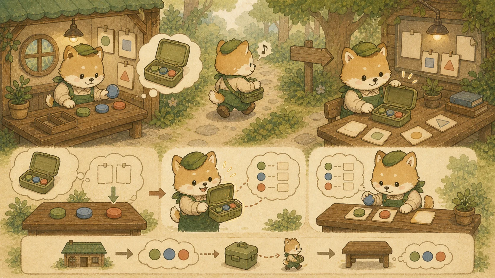
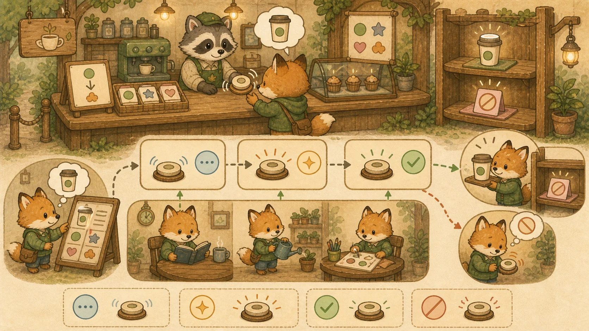

Chapter 05: 모던 JS 기초 → React 19 & Next.js 15 + TypeScript
모던 JS(ES6+) 기초 — 화살표 함수·구조분해·spread·클로저·async/await·배열 메서드부터 시작해, JSX·TypeScript·React Hooks(useState/useEffect/useRef/useMemo)·컴포넌트 설계, Next.js 15 App Router의 Server/Client Component·Uncached·Turbopack까지 — JS 토대부터 React 19 시대 프론트엔드를 15개 섹션으로 완전 정복합니다.
🟨 A. 모던 JS(ES6+) 기초 — React의 토대
React·Next.js·TypeScript는 모두 ES6+ 자바스크립트 위에서 돕니다. 이 토대 없이 React 문법만 외우면 "왜 이렇게 쓰는지" 모른 채 막힙니다. 복귀 개발자가 가장 먼저 손에 다시 익혀야 할 1순위.
1. 모던 JS 핵심 문법 — 화살표 함수부터 옵셔널 체이닝까지
자바 8 람다가 자바의 기반이듯, ES6(2015)+ 문법은 모던 프론트엔드의 기반입니다. ES5/jQuery 시대에 머물러 있었다면 이 절을 손에 익히는 게 React보다 먼저입니다.
💡 비유로 이해하기: 신형 공구 세트
ES5가 "망치 하나로 모든 걸 하던 시절"이라면, ES6+는 화살표 함수·구조 분해·spread 같은 전동 공구 세트입니다. React 코드는 이 공구들을 당연히 쓴다고 전제하므로, 공구 사용법을 모르면 React 예제가 외계어처럼 보입니다.
① let / const / var와 스코프
var x = 1; // 🪨 함수 스코프 + 호이스팅 + 재선언 가능 → 버그 온상, 이제 안 씀
let y = 2; // ✅ 블록 스코프 {}, 재할당 가능
const z = 3; // ✅ 블록 스코프, 재할당 불가 (기본값으로 권장)
// React에선 거의 const만 씀. 재할당이 필요한 드문 경우만 let.
const product = { name: "후드", price: 59000 };
product.price = 49000; // ✅ const 객체의 "내부 속성"은 변경 가능 (참조가 고정될 뿐)② 화살표 함수
// 일반 함수
function add(a, b) { return a + b; }
// 화살표 함수 — 본문이 한 줄이면 return 생략
const add2 = (a, b) => a + b;
const greet = name => `안녕, ${name}`; // 파라미터 1개면 괄호 생략 가능
const log = () => console.log("hi"); // 파라미터 0개
// React 이벤트 핸들러, map 콜백에서 압도적으로 많이 쓰임
<button onClick={() => addToCart(product.id)}>담기</button>
// ⚠️ 화살표 함수는 자신만의 this가 없음 (상위 this를 그대로 사용) → React에서 오히려 장점③ 구조 분해 (Destructuring)
// 객체 구조 분해 — React props에서 끝없이 등장
const product = { name: "후드", price: 59000, stock: 12 };
const { name, price } = product; // name="후드", price=59000
// 함수 파라미터에서 바로 구조 분해 (React 컴포넌트 표준)
function ProductCard({ name, price }) { // props.name, props.price를 바로 꺼냄
return `${name}: ${price}원`;
}
// 배열 구조 분해 — useState가 정확히 이 문법!
const [count, setCount] = useState(0); // 배열 [현재값, 변경함수]를 분해
const [first, second] = ["a", "b"]; // first="a", second="b"
// 기본값 + 이름 변경
const { stock = 0, name: productName } = product;④ Spread / Rest 연산자 (...)
// Spread: 펼치기 — React 상태 불변성 유지의 핵심
const cart = [item1, item2];
const newCart = [...cart, item3]; // 기존 배열 복사 + 추가 (원본 불변!)
const updated = { ...product, price: 49000 }; // 객체 복사 + 일부 덮어쓰기
// ⚠️ React에선 push() 같은 직접 변경 금지 → 항상 spread로 새 배열/객체 생성
setCart([...cart, item3]); // ✅ React가 변화 감지
// cart.push(item3); setCart(cart); // ❌ 같은 참조 → 리렌더링 안 됨
// Rest: 모으기 — 나머지를 배열/객체로
const [head, ...tail] = [1, 2, 3, 4]; // head=1, tail=[2,3,4]
const { id, ...rest } = product; // id 분리, 나머지는 rest 객체⑤ 템플릿 리터럴
const name = "후드";
const price = 59000;
// 🪨 ES5: 문자열 연결 지옥
var msg = name + "는 " + price + "원입니다";
// ✅ 백틱(`) + ${} — 변수/식을 직접 삽입, 줄바꿈도 그대로
const msg2 = `${name}는 ${price.toLocaleString()}원입니다`;
const url = `https://api.shop.com/products/${product.id}`;⑥ ES 모듈 (import / export)
// utils.js — 내보내기
export const formatPrice = (p) => `${p.toLocaleString()}원`; // named export
export default function ProductCard() { /* ... */ } // default export
// app.js — 가져오기
import ProductCard, { formatPrice } from "./utils.js"; // default + named 동시
import { useState, useEffect } from "react"; // 라이브러리에서 named
import * as utils from "./utils.js"; // 전체를 객체로⑦ 옵셔널 체이닝(?.)·널 병합(??)
// 옵셔널 체이닝: 중간이 null/undefined면 에러 대신 undefined 반환
const city = user?.address?.city; // user나 address가 없어도 안전 (에러 X)
onAddToCart?.(product.id); // 함수가 있을 때만 호출
// 널 병합: 왼쪽이 null/undefined일 때만 오른쪽 사용 (0, ""는 통과!)
const qty = inputQty ?? 1; // inputQty가 null/undefined면 1
// ⚠️ || 와 차이: 0 || 1 → 1 (0을 falsy로 봄), 0 ?? 1 → 0 (null만 체크)⑧ 삼항 연산자·단축 평가 (JSX 조건부 렌더링의 기반)
// 삼항: 조건 ? 참 : 거짓 — JSX에서 if문 대신 사용
const label = stock > 0 ? "재고 있음" : "품절";
// 단축 평가 && : 왼쪽이 true일 때만 오른쪽 — JSX 조건부 표시의 핵심
{stock > 0 && 구매 가능} // stock>0이면 span 렌더, 아니면 아무것도 안 함
{error && {error}
}⛓️ 이 문법들은 다음 절(클로저·비동기)과 함께 Section B 이후 모든 React 코드의 전제가 됩니다.
2. 클로저 · 비동기 · 배열 메서드 — React가 작동하는 진짜 이유
이 절은 "문법"을 넘어 React Hooks가 왜 그렇게 동작하는지를 설명하는 핵심 개념입니다. 특히 클로저는 useState/useEffect의 작동 원리 그 자체입니다.
① 클로저 (Closure) — hooks가 상태를 "기억"하는 원리
💡 비유로 이해하기: 도시락을 싸 들고 나온 함수
클로저는 "함수가 만들어질 때 주변 변수를 도시락처럼 싸 들고 나오는 것"입니다. 함수가 다른 곳에서 실행돼도, 태어난 환경의 변수에 계속 접근할 수 있습니다. React가 리렌더링돼도 useState의 상태값을 이벤트 핸들러가 기억하는 건 바로 이 클로저 덕분입니다.

// 클로저 기본: 내부 함수가 외부 함수의 변수를 기억
function makeCounter() {
let count = 0; // 외부 변수
return () => ++count; // 내부 함수가 count를 "싸 들고" 나옴
}
const counter = makeCounter();
counter(); // 1
counter(); // 2 ← count가 계속 살아있음 (클로저가 기억)
// 🎯 React에서: 이벤트 핸들러가 렌더 시점의 state를 클로저로 캡처
function Cart() {
const [items, setItems] = useState([]);
const addItem = (product) => {
// 이 함수는 현재 렌더의 items를 "기억"함 (클로저)
setItems([...items, product]); // 캡처된 items + 새 항목
};
return ;
}
// 💡 useState, useEffect, useCallback이 동작하는 근본 원리가 클로저입니다.② 배열 고차 메서드 — map / filter / reduce / find
자바의 Stream API(Ch 1 섹션 9)와 개념적 사촌입니다. for문 대신 선언적으로 데이터를 가공합니다. React 리스트 렌더링의 99%가 map입니다.
const products = [
{ id: 1, name: "후드", price: 59000 },
{ id: 2, name: "티셔츠", price: 19000 },
{ id: 3, name: "코트", price: 159000 },
];
// map: 각 요소를 변환 → 새 배열 (React 리스트 렌더링의 핵심!)
const names = products.map(p => p.name); // ["후드","티셔츠","코트"]
products.map(p => ③ Promise — 비동기 작업의 그릇
💡 비유로 이해하기: 카페 진동벨
주문 후 음료가 나올 때까지 멍하니 서 있지 않고 진동벨(Promise)을 받습니다. 음료가 준비되면(resolve) 벨이 울리고, 재료가 떨어지면(reject) 환불 안내를 받습니다. API 호출처럼 시간이 걸리는 작업의 "미래 결과"를 담는 그릇입니다.

// Promise: pending → fulfilled(resolve) 또는 rejected(reject)
fetch("https://api.shop.com/products") // fetch는 Promise를 반환
.then(res => res.json()) // 성공 시 다음 단계로
.then(data => console.log(data)) // 체이닝
.catch(err => console.error(err)); // 실패 시④ async / await — 비동기를 동기처럼
// .then() 체이닝을 동기 코드처럼 평평하게 (가독성 ↑)
async function loadProducts() {
try {
const res = await fetch("/api/products"); // 응답 올 때까지 "기다림"
const data = await res.json(); // JSON 파싱도 await
return data;
} catch (err) {
console.error("로딩 실패:", err);
}
}
// 🎯 React useEffect, Server Actions(Ch 7), 이벤트 핸들러에서 끝없이 등장
// ⚠️ await는 반드시 async 함수 안에서만 사용 가능⑤ 브라우저 DOM 렌더링 + npm 기초 (맥락)
🌳 DOM이란
브라우저가 HTML을 읽어 만든 트리 구조 객체. JS로 이 트리를 조작하면 화면이 바뀝니다. 직접 조작은 느려서 React가 Virtual DOM(Section B)으로 최적화합니다.
📦 npm / package.json
npm install react로 라이브러리를 node_modules에 설치. package.json은 프로젝트의 의존성 목록 + 스크립트(npm run dev) 명세서입니다.
⛓️ 클로저는 useState/useEffect 섹션의 작동 원리로 다시 등장하고, 배열 메서드는 자바 Stream API와, async/await는 Ch 7 Axios·Server Actions와 연결됩니다.
⚛️ B. React 기초 — JSX & 컴포넌트
3. 리액트의 핵심 엔진: Virtual DOM 렌더링 아키텍처
리액트가 복잡한 UI를 일관되게 관리하는 비결은 메모리 내부의 가상 복제본(Virtual DOM)으로 변경점만 계산해 실제 DOM에 반영하는 방식입니다.
💡 비유로 이해하기: 인테리어 가상 3D 시뮬레이터
레거시 JS는 "가구를 바꿀 때마다 진짜 옷장과 소파를 물리적으로 밀어보는 것"으로, 바닥이 긁히듯 화면이 깜빡거립니다. Virtual DOM은 "3D 인테리어 앱에서 가상 배치를 시뮬레이션 후, 바뀐 부분만 실제 가구업체(Real DOM)에 주문"하는 것입니다.
렌더링 프로세스:
① State 변경 →
② 새 Virtual DOM 생성 →
③ 이전 VDOM과 Diff 비교 →
④ 바뀐 부분만 Real DOM 반영 (Reconciliation)
4. JSX — JavaScript 안에 HTML을 쓴다
JSX는 JavaScript 코드 안에 HTML과 유사한 문법을 직접 쓸 수 있게 해주는 문법 확장입니다. 브라우저가 직접 이해하는 게 아니라, 빌드 시 React.createElement() 호출로 변환됩니다.
// ✅ 규칙 1: 반드시 하나의 루트 요소로 감싸야 함 (Fragment <> 사용 가능)
function ProductCard({ product }) {
return (
<>
{/* ✅ 규칙 2: JS 표현식은 중괄호 {} 안에 */}
<h2>{product.name}</h2>
<p>가격: {product.price.toLocaleString()}원</p>
{/* ✅ 규칙 3: class → className, for → htmlFor */}
<div className="product-badge">
{/* ✅ 규칙 4: style은 객체로 전달, camelCase 사용 */}
<span style={{ color: 'red', fontSize: '14px' }}>SALE</span>
</div>
{/* ✅ 규칙 5: 모든 태그는 반드시 닫아야 함 */}
<img src={product.image} alt={product.name} />
<br />
</>
);
}💡 비유로 이해하기: 요리 레시피 카드
JSX는 "요리 레시피(HTML 구조) 안에 재료 수량을 변수로 적는 것"입니다. {재료.이름}처럼 중괄호 안에 변수를 넣으면, 실행 시점에 실제 재료 이름으로 자동 치환됩니다.
5. TypeScript — 자바 백그라운드에서의 빠른 전이
2026년 React/Next.js 실무 코드는 거의 100% TypeScript로 작성됩니다. 자바스크립트만으로는 동료 코드를 읽을 수 없고, 채용 공고에서 우대사항이 아닌 필수사항입니다. 다행히 자바 백그라운드라면 타입 사고방식이 이미 익숙해 흡수가 빠릅니다.
💡 비유로 이해하기: 자바 ↔ TS 짝꿍 비교
자바의 interface UserDto { Long id; String name; }를 본 적 있다면 TS의 interface UserDto { id: number; name: string; }는 자연스럽습니다. 주요 차이는 구조적 타입(이름이 달라도 모양만 같으면 호환)과 유니온/리터럴 타입의 풍부함이라는 정도입니다.
// 1. 기본 타입 (자바와 거의 동일)
const id: number = 42; // int/long → number 하나로 통합
const name: string = "Antigravity"; // String → string (소문자 주의)
const active: boolean = true; // boolean
const tags: string[] = ["new", "hot"]; // List<String> → string[]
// 2. 객체 타입 — interface (자바 인터페이스와 유사)
interface Product {
id: number;
name: string;
price: number;
category: "outer" | "top" | "bottom"; // 리터럴 유니온 = 자바 enum 대용
imageUrl?: string; // ? = nullable (자바의 Optional<String>)
}
// 3. type alias (interface와 거의 같지만 union/intersection 가능)
type ProductId = number;
type Status = "PENDING" | "PAID" | "DELIVERED";
// 4. 제네릭 — 자바와 동일
function findById<T extends { id: number }>(items: T[], id: number): T | undefined {
return items.find(item => item.id === id);
}
// 5. 유틸리티 타입 — 자바엔 없는 강력한 기능
type ProductPreview = Pick<Product, "id" | "name" | "price">; // 일부만 선택
type ProductUpdate = Partial<Product>; // 모든 필드 optional
type ProductWithoutImage = Omit<Product, "imageUrl">; // 일부 제외// app/components/ProductCard.tsx (확장자 .tsx 주의)
"use client";
import { useState } from "react";
interface ProductCardProps {
product: Product; // 위에서 정의한 Product 타입
onAddToCart?: (id: number) => void; // 옵셔널 콜백
}
export default function ProductCard({ product, onAddToCart }: ProductCardProps) {
const [qty, setQty] = useState<number>(1); // useState도 제네릭
const handleClick = (): void => {
onAddToCart?.(product.id); // 옵셔널 체이닝 (자바 Optional.ifPresent와 유사)
};
return (
<div className="glass-panel">
<h3>{product.name}</h3>
<input
type="number"
value={qty}
onChange={(e: React.ChangeEvent<HTMLInputElement>) =>
setQty(Number(e.target.value))
}
/>
<button onClick={handleClick}>장바구니</button>
</div>
);
}자바 개발자가 자주 헷갈리는 차이점:
| 자바 | TypeScript | 설명 |
|---|---|---|
Long / int | number | TS엔 정수/실수 구분 없음 (모두 64비트 float) |
String | string | 소문자. 대문자 String은 객체 래퍼 (지양) |
List<T> | T[] or Array<T> | 두 방식 모두 가능 |
Optional<T> | T | null or T? | 유니온 타입으로 표현 |
enum | 리터럴 유니온 "A" | "B" | enum도 있지만 유니온 선호 |
@Override 명시 | 구조적 타입 자동 검사 | 모양만 같으면 호환 (덕 타이핑) |
| Spring DI | import + 함수 호출 | TS는 DI 컨테이너 없음 (필요 시 tsyringe 등) |
⛓️ 폼 검증을 위한 Zod 스키마는 Chapter 6 — react-hook-form에서 등장합니다. 백엔드 Bean Validation과 짝을 이룹니다.
6. Props & Children — 컴포넌트 간 데이터 전달
Props(속성)는 부모 컴포넌트가 자식에게 데이터를 전달하는 유일한 통로입니다. 읽기 전용이며, 자식이 직접 수정할 수 없습니다.
// 1. 기본 Props 전달
function ProductPrice({ price, currency = "원" }) { // 기본값 설정 가능
return <p className="price">{price.toLocaleString()}{currency}</p>;
}
// 사용: <ProductPrice price={49000} /> → "49,000원"
// 2. children — 태그 사이의 내용을 통째로 전달
function Card({ title, children }) {
return (
<div className="glass-panel">
<h3>{title}</h3>
<div>{children}</div> {/* 여기에 부모가 넣은 내용이 들어옴 */}
</div>
);
}
// 사용:
// <Card title="인기 상품">
// <ProductPrice price={49000} /> ← 이 부분이 children!
// <p>오버핏 셔츠</p>
// </Card>
// 3. Props 전개 연산자 (스프레드)
function ProductCard(props) {
return <Card {...props} />; // props를 통째로 전달
}Props 흐름 규칙:
부모 → 자식 단방향 (One-way Data Flow).
자식이 부모 데이터를 바꾸려면 콜백 함수를 props로 받아 호출해야 합니다.
7. 조건부 렌더링 & 리스트 렌더링
function ProductStatus({ stock, isNew }) {
return (
<div>
{/* 패턴 1: 삼항 연산자 — 둘 중 하나를 반드시 보여줄 때 */}
<span>{stock > 0 ? "구매 가능" : "품절"}</span>
{/* 패턴 2: && 연산자 — 조건이 true일 때만 보여줄 때 */}
{isNew && <span className="badge">NEW</span>}
{/* 패턴 3: 조기 return — 전체 컴포넌트를 조건부로 */}
</div>
);
}
// 조기 return 패턴
function ProductDetail({ product }) {
if (!product) return <p>상품을 찾을 수 없습니다.</p>;
return <h2>{product.name}</h2>;
}function ProductList({ products }) {
return (
<ul>
{products.map((product) => (
// ⚠️ key는 반드시 고유값! index 사용은 비추천 (순서 변경 시 버그)
<li key={product.id}>
<h3>{product.name}</h3>
<p>{product.price.toLocaleString()}원</p>
</li>
))}
</ul>
);
}
// 빈 배열 처리
function SafeProductList({ products }) {
if (products.length === 0) {
return <p>등록된 상품이 없습니다.</p>;
}
return <ProductList products={products} />;
}⚠️ key를 왜 써야 하나요?
React는 리스트를 다시 그릴 때 key를 보고 "어떤 아이템이 추가/삭제/이동되었는지" 판단합니다. key가 없으면 전체 리스트를 처음부터 다시 그립니다. DB의 PK(id)처럼 절대 바뀌지 않는 고유값을 사용하세요. 배열 인덱스(0,1,2)는 아이템 순서가 바뀌면 엉뚱한 아이템에 상태가 붙어 버그가 생깁니다.
8. 이벤트 핸들링 — onClick, onChange, onSubmit
React의 이벤트는 HTML 이벤트와 비슷하지만, camelCase로 작성하고 함수 참조를 전달합니다 (호출이 아님!).
function SearchBar() {
const [query, setQuery] = useState("");
// 패턴 1: 별도 핸들러 함수
const handleSubmit = (e) => {
e.preventDefault(); // 폼 기본 새로고침 방지!
console.log("검색어:", query);
};
return (
<form onSubmit={handleSubmit}>
{/* 패턴 2: 인라인 화살표 함수 */}
<input
type="text"
value={query}
onChange={(e) => setQuery(e.target.value)}
placeholder="상품 검색..."
/>
{/* ⚠️ 주의: onClick={handleSubmit()} ← 이건 즉시 실행! (X) */}
{/* ✅ 올바른: onClick={handleSubmit} ← 함수 참조 전달 (O) */}
<button type="submit">검색</button>
</form>
);
}
// 패턴 3: 자식에서 부모로 이벤트 전달 (콜백 Props)
function QuantitySelector({ onQuantityChange }) {
return (
<div>
<button onClick={() => onQuantityChange(-1)}>-</button>
<button onClick={() => onQuantityChange(+1)}>+</button>
</div>
);
}
// 부모에서: <QuantitySelector onQuantityChange={(delta) => setQty(qty + delta)} />🎨 [실무 보강 박스] 스타일링 전략 — CSS Modules vs Tailwind vs CSS-in-JS
2026년 React 스타일링 선택지는 크게 3가지로 수렴했습니다. 각자 강점과 트레이드오프가 다릅니다.
| 방식 | 장점 | 단점 | 언제 선택? |
|---|---|---|---|
| CSS Modules (.module.css) | 전통 CSS 그대로, Next.js 빌트인, 0 런타임 | 파일 이동 잦음, 동적 스타일 표현 제한 | CSS에 친숙한 팀, 디자인 시스템 안정 |
| Tailwind CSS | 유틸리티 클래스, 빠른 프로토타이핑, 0 런타임, 마크업과 같은 곳 | 클래스명 폭주, 초보엔 학습 곡선 | 현재 채용 시장 가장 보편적 — 새 프로젝트 디폴트 |
| CSS-in-JS (styled-components, Emotion) | JS로 동적 스타일, 컴포넌트 단위 캡슐화 | 런타임 비용, RSC 호환성 이슈 | 레거시 유지보수 — 신규 비추 |
2026 권장 기본값: Tailwind CSS. Next.js App Router의 RSC와 잘 어울리고 채용 공고 빈도가 압도적입니다. 안정된 디자인 시스템이 이미 있다면 CSS Modules도 좋은 선택. CSS-in-JS는 Server Component에서 잘 안 도므로 신규 프로젝트엔 비추.
🪝 C. React Hooks 완전 정복
9. useState — 컴포넌트의 기억 장치
useState는 컴포넌트가 데이터를 기억하고, 변경될 때 화면을 자동 갱신하게 합니다.
💡 비유로 이해하기: 메모 보드
useState는 컴포넌트 옆에 붙어있는 메모 보드(화이트보드)입니다. setState로 보드 내용을 바꾸면, React가 자동으로 보드를 보고 화면을 다시 그립니다. 직접 보드를 몰래 고치면(state 직접 변경) React는 모르고 화면이 안 바뀝니다!
"use client";
import { useState } from "react";
function ShoppingCart() {
// [현재값, 세터함수] = useState(초기값)
const [count, setCount] = useState(0);
const [items, setItems] = useState([]);
// ✅ 숫자 상태 업데이트
const increment = () => setCount(count + 1);
// ✅ 이전 상태 기반 업데이트 (함수형 — 비동기 안전!)
const safeIncrement = () => setCount(prev => prev + 1);
// ✅ 배열 상태 업데이트 — 불변성 유지 (새 배열 생성!)
const addItem = (product) => {
setItems(prev => [...prev, product]); // 추가
};
const removeItem = (id) => {
setItems(prev => prev.filter(item => item.id !== id)); // 삭제
};
const updateItem = (id, newQty) => {
setItems(prev => prev.map(item => // 수정
item.id === id ? { ...item, qty: newQty } : item
));
};
// ⚠️ 절대 금지! 직접 변경하면 리렌더링 안 됨
// items.push(newItem); ← ❌ 불변성 위반!
// setItems(items); ← ❌ 같은 참조이므로 React가 변화 감지 못함
return (
<div>
<p>장바구니: {count}개</p>
<button onClick={safeIncrement}>추가</button>
</div>
);
}10. useEffect — 사이드 이펙트 관리 (API 호출, 구독)
useEffect는 렌더링 이후에 실행되는 부수 효과(Side Effect)를 관리합니다. API 호출, 이벤트 구독, 타이머, DOM 직접 조작 등이 여기 해당합니다.
"use client";
import { useState, useEffect } from "react";
function ProductDetail({ productId }) {
const [product, setProduct] = useState(null);
const [loading, setLoading] = useState(true);
// 패턴 1: 특정 값 변경 시 실행 (가장 흔함!)
useEffect(() => {
setLoading(true);
fetch(`/api/products/${productId}`)
.then(res => res.json())
.then(data => {
setProduct(data);
setLoading(false);
});
}, [productId]); // ← productId가 바뀔 때만 재실행
// 패턴 2: 마운트 시 1번만 실행 (빈 배열 [])
useEffect(() => {
console.log("컴포넌트가 화면에 등장!");
// 클린업 함수: 언마운트 시 실행 (메모리 누수 방지!)
return () => {
console.log("컴포넌트가 화면에서 사라짐");
};
}, []); // ← 빈 배열 = 마운트 시 1번만
// 패턴 3: 매 렌더링마다 실행 (의존성 배열 생략 — 거의 안 씀)
// useEffect(() => { ... }); // ← 성능 주의!
if (loading) return <p>로딩 중...</p>;
return <h2>{product.name}</h2>;
}11. useRef — 리렌더링 없는 값 저장 & DOM 접근
useRef는 두 가지 용도로 사용됩니다: ① DOM 요소에 직접 접근, ② 리렌더링을 유발하지 않는 값 저장.
"use client";
import { useRef, useEffect, useState } from "react";
function SearchInput() {
const inputRef = useRef(null); // DOM 참조용
const prevQueryRef = useRef(""); // 이전 값 기억용
const [query, setQuery] = useState("");
// 마운트 시 자동 포커스
useEffect(() => {
inputRef.current.focus(); // DOM 직접 접근!
}, []);
// 이전 검색어 기억 (리렌더링 유발 X)
useEffect(() => {
prevQueryRef.current = query;
}, [query]);
return (
<div>
<input ref={inputRef} value={query}
onChange={(e) => setQuery(e.target.value)}
placeholder="상품 검색..." />
<p>이전 검색어: {prevQueryRef.current}</p>
</div>
);
}12. useMemo · useCallback · React 19 Compiler
💡 비유로 이해하기: 손으로 깎던 도장 → 자동 조각기
React 18 시대까지는 개발자가 손수 "이 함수는 매번 새로 만들지 마라(useCallback)", "이 값은 재계산하지 마라(useMemo)"를 일일이 명시했습니다. React 19 Compiler는 자동 조각기처럼 컴파일 타임에 어떤 부분을 메모이즈할지 분석합니다. 핵심은 "수동 메모이제이션의 필요를 크게 줄여주는 방향"이라는 점 — 모든 곳에서 자동으로 적용되는 마법이 아니라, 별도 설치/설정이 필요하고 안전하게 컴파일 가능한 컴포넌트만 최적화합니다(아래 제약 참고).
React 19 Compiler의 핵심:
- 자동 메모이제이션: 컴파일러가 안전하게 처리 가능한 컴포넌트의 값을 정적 분석하여 자동 캐싱 (DevTools에 "Memo ✨" 배지 표시)
- 레퍼런스 동등성 자동 유지: 자식에 전달되는 객체/함수의 참조가 안정적으로 유지됨
- 코드 변경 최소화: Rules of React를 지킨 평범한 컴포넌트는 Babel 플러그인이 알아서 처리
- opt-out 가능: "use no memo" 지시어로 특정 컴포넌트만 제외
- 설치·설정 필수: Babel 플러그인 설치 + 활성화가 있어야 동작. "React 19 = 어디서나 자동"이 아님.
- Rules of React 준수 시에만: 규칙을 어긴 컴포넌트는 컴파일러가 최적화를 건너뜀(앱을 깨뜨리지 않고 안전하게 스킵). ESLint 진단으로 확인.
- Next.js에선 아직 Experimental: 현재 Babel 플러그인 방식이라 개발/빌드가 느려질 수 있음(공식 안내).
- 수동 메모이제이션 지식은 여전히 필요: 레거시 코드, 라이브러리 경계, 컴파일러 미적용 프로젝트, 프로파일링 후 핀포인트 최적화에서 useMemo/useCallback은 계속 등장.
- 측정 우선: 컴파일러를 켜도 "느려서 문제인지" 프로파일링으로 먼저 확인하는 습관은 유효.
// 🪨 React 18 시대 — 손으로 모든 최적화 명시
function ProductList({ products }) {
const [sortBy, setSortBy] = useState("price");
const sortedProducts = useMemo(() => { // 손수 useMemo
return [...products].sort(/* ... */);
}, [products, sortBy]);
const handleDelete = useCallback((id) => { // 손수 useCallback
/* ... */
}, []);
return sortedProducts.map(p =>
<ProductCard key={p.id} product={p} onDelete={handleDelete} />
);
}
// ⚡ React 19 시대 — 그냥 평범하게 작성. 컴파일러가 알아서 최적화
function ProductList({ products }) {
const [sortBy, setSortBy] = useState("price");
const sortedProducts = [...products].sort(/* ... */);
const handleDelete = (id) => { /* ... */ };
return sortedProducts.map(p =>
<ProductCard key={p.id} product={p} onDelete={handleDelete} />
);
}
// 💡 컴파일러가 자동으로 위 코드를 아래와 같이 변환 (의사 결과)
// const $cache = useMemoCache();
// const sortedProducts = $cache[0] ?? ($cache[0] = [...products].sort(...));
// const handleDelete = $cache[1] ?? ($cache[1] = (id) => ...);# 컴파일러 Babel 플러그인 (devDependency)
npm install -D babel-plugin-react-compiler@latest
# ESLint 규칙은 eslint-plugin-react-hooks v5+에 통합됨
# (구 'eslint-plugin-react-compiler' 별도 패키지가 아니라 react-hooks 플러그인)
npm install -D eslint-plugin-react-hooks@latest// next.config.ts — Next.js에서 활성화 (현재 Experimental)
const nextConfig = {
experimental: {
reactCompiler: true // ⚠️ Next.js 15에선 실험적 기능. Babel 기반이라 빌드가 느려질 수 있음
}
};
export default nextConfig;
// 특정 컴포넌트만 컴파일러 적용 제외
function LegacyComponent() {
"use no memo"; // 이 함수는 자동 최적화에서 제외
// 기존 useMemo/useCallback 그대로 유지
}하지만 면접/레거시 대응을 위해 useMemo/useCallback 동작 원리는 알아야 합니다. 비싼 연산이나 함수를 캐싱하여 불필요한 재계산/재생성을 방지하는 메커니즘입니다.
"use client";
import { useState, useMemo, useCallback } from "react";
function ProductList({ products }) {
const [sortBy, setSortBy] = useState("price");
const [query, setQuery] = useState("");
// useMemo: 정렬된 결과를 캐싱 (products나 sortBy가 바뀔 때만 재계산)
const sortedProducts = useMemo(() => {
console.log("정렬 재계산!"); // sortBy/products 변경 시에만 찍힘
return [...products].sort((a, b) =>
sortBy === "price" ? a.price - b.price : a.name.localeCompare(b.name)
);
}, [products, sortBy]);
// useCallback: 함수 참조를 고정 (자식 컴포넌트의 불필요한 리렌더링 방지)
const handleDelete = useCallback((id) => {
// 삭제 로직...
}, []); // 의존성 없음 → 컴포넌트 생애 동안 같은 참조 유지
return (
<div>
<input value={query} onChange={(e) => setQuery(e.target.value)} />
{sortedProducts.map(p =>
<ProductCard key={p.id} product={p} onDelete={handleDelete} />
)}
</div>
);
}
// ⚠️ 언제 쓰나요?
// useMemo: 복잡한 필터링/정렬/계산 결과를 캐싱할 때
// useCallback: 자식에 전달하는 콜백 함수를 memo된 자식과 함께 쓸 때
// 남용 금지! 단순 연산에는 오히려 오버헤드. 측정 후 적용.🚀 D. Next.js 15 App Router (Uncached by default · Turbopack)
13. Server Component vs Client Component — 경계선 설계
Next.js 15 App Router의 핵심은 React Server Components (RSC)입니다. 기본적으로 모든 컴포넌트는 서버에서 실행되며, 클릭/상태 변경이 필요한 부분만 "use client"로 분리합니다.
Next.js 15의 3대 핵심 변경점 (면접 단골):
// 🪨 Next.js 14 (이전): fetch가 자동으로 캐싱됨
async function ProductPage() {
const product = await fetch("/api/products/1");
// ↑ 자동으로 force-cache 처럼 동작 → stale 데이터 위험
}
// ⚡ Next.js 15: fetch는 기본적으로 더 이상 캐싱되지 않음
async function ProductPage() {
// 기본: 캐싱 안 함 — 매 요청 신선한 데이터
const product = await fetch("/api/products/1");
// 명시적으로 캐싱 원하면 옵션 추가
const banner = await fetch("/api/banners", {
cache: "force-cache" // 캐싱
});
// 또는 시간 기반 재검증
const popular = await fetch("/api/popular", {
next: { revalidate: 60 } // 60초마다 갱신
});
}fetch()요청 — 기본 캐싱 안 됨 (이전엔 자동 캐싱).- GET Route Handler — 기본 캐싱 안 됨. 캐싱하려면
export const dynamic = 'force-static'명시. - Client Router Cache — Page 세그먼트의
staleTime이 0으로 변경(네비게이션 시 최신 데이터). 단 layout 데이터·뒤로가기 복원·loading.js는 여전히 캐시.
// package.json
{
"scripts": {
"dev": "next dev --turbo", // 개발 서버: Turbopack (Next.js 15에서 stable)
"build": "next build" // 빌드: Next.js 15 기준 Turbopack은 dev만 stable, build는 Webpack
}
}
// ⚠️ Next.js 15에서 `next dev --turbo`만 정식(stable)입니다.
// `next build`의 Turbopack은 이후 버전에서 단계적으로 안정화 — 빌드 적용은 현재 버전 공식 문서 확인 필수.
// Rust 기반으로 작성되어 메모리 사용량도 절감
// 대형 프로젝트 (1000+ 모듈)에서 차이가 극적// 🪨 Next.js 14: params가 동기 객체
export default function Page({ params }: { params: { id: string } }) {
return <div>Product {params.id}</div>;
}
// ⚡ Next.js 15: params가 Promise. await 또는 use()로 풀기
export default async function Page({
params
}: {
params: Promise<{ id: string }>
}) {
const { id } = await params; // ← await 필수
return <div>Product {id}</div>;
}
// Client Component에서는 React.use()로 (실험적이지만 권장)
"use client";
import { use } from "react";
export default function Page({
params
}: {
params: Promise<{ id: string }>
}) {
const { id } = use(params);
return <div>Product {id}</div>;
}
// 마이그레이션: codemod 자동화 제공
// npx @next/codemod next-async-request-api .이외 주요 변경: React 19 정식 지원, Form 컴포넌트 신설 (<Form> with action prop), partial prerendering(PPR) 안정화, after() API로 응답 이후 비동기 작업 실행 등.
// app/products/[id]/page.js — Server Component (기본값, "use client" 없음!)
import AddToCartButton from "./AddToCartButton"; // Client Component
export default async function ProductDetailPage({ params }) {
// ✅ 서버에서 직접 데이터 fetch (useEffect, useState 불필요!)
const product = await fetch(`https://api.shop.com/products/${params.id}`)
.then(res => res.json());
return (
<div className="glass-panel">
<h1>{product.name}</h1>
<p>{product.price.toLocaleString()}원</p>
{/* 클릭이 필요한 부분만 Client Component로 분리! */}
<AddToCartButton productId={product.id} />
</div>
);
}🧭 Server vs Client Component 결정 트리: 새 컴포넌트를 만들 때 어떤 환경에서 실행할지 결정하는 흐름도입니다. 핵심 규칙은 "기본은 Server, 인터랙션이 필요할 때만 Client".
flowchart TD
Start(["📝 새 컴포넌트
설계 시작"])
Q1{"useState,
useEffect,
onClick 필요?"}
Q2{"브라우저 API
(window, localStorage,
document) 사용?"}
Q3{"DB 직접 접근
또는 비밀 키 사용?"}
Q4{"파일 시스템
접근 필요?"}
Server["✅ Server Component (기본)
'use client' 없음
async/await 직접 사용
JS 번들 0바이트"]
Client["⚛️ Client Component
최상단에 'use client'
useState · useEffect 가능
JS 번들 포함됨"]
Hybrid["🔀 하이브리드
외곽은 Server
인터랙션 부분만
Client로 분리"]
Start --> Q1
Q1 -- "No" --> Q3
Q1 -- "Yes" --> Q2
Q2 -- "Yes" --> Client
Q2 -- "No" --> Hybrid
Q3 -- "Yes" --> Server
Q3 -- "No" --> Q4
Q4 -- "Yes" --> Server
Q4 -- "No" --> Server
style Server fill:#00b894,color:#fff
style Client fill:#74b9ff,color:#fff
style Hybrid fill:#fdcb6e,color:#000
14. App Router 파일 규칙 — page.js, layout.js, loading.js
Next.js App Router는 폴더 구조 = URL 경로입니다. 특수 파일명으로 레이아웃, 로딩, 에러 처리를 자동화합니다.
// 📂 app/ 폴더 구조
// app/
// ├── layout.js → 전체 공통 레이아웃 (헤더, 푸터)
// ├── page.js → "/" 메인 페이지
// ├── loading.js → 로딩 UI (자동 Suspense 래핑)
// ├── error.js → 에러 발생 시 대체 UI
// ├── not-found.js → 404 페이지
// └── products/
// ├── page.js → "/products" 상품 목록
// └── [id]/
// ├── page.js → "/products/123" 상품 상세 (동적 라우팅!)
// └── loading.js → 상품 상세 로딩 UI
// layout.js — 중첩 레이아웃 (자식 페이지를 감싸는 껍데기)
export default function RootLayout({ children }) {
return (
<html lang="ko">
<body>
<header>쇼핑몰 헤더</header>
<main>{children}</main> {/* 여기에 page.js가 들어감! */}
<footer>© 2024</footer>
</body>
</html>
);
}
// loading.js — 자동 Suspense 래핑 (data fetch 중 보여줄 UI)
export default function Loading() {
return <div className="spinner">상품 정보를 불러오는 중...</div>;
}15. Hydration (하이드레이션) — 서버 HTML에 생명 불어넣기
서버가 보낸 정적 HTML 위에, 브라우저가 React의 이벤트 핸들러와 상태 로직(JS)을 연결하여 인터랙티브하게 만드는 과정입니다.
💡 비유로 이해하기: 마네킹에 생명 불어넣기
서버가 만든 HTML은 옷을 완벽히 입은 마네킹입니다 — 보기엔 완성되었지만 클릭해도 반응이 없습니다. Hydration은 이 마네킹에 근육(이벤트)과 신경(상태)을 연결하여 살아 움직이게 하는 과정입니다. Hydration이 끝나야 비로소 버튼 클릭, 폼 입력 등이 동작합니다.
① 서버: HTML 생성 →
② 브라우저: 즉시 화면 표시 (FCP) →
③ JS 다운로드 & 실행 →
④ Hydration 완료 (인터랙티브!)
📚 05챕터 헷갈리는 용어 사전
🛠️ 직접 만들어보기 — "이걸로 만들 수 있나?" 체크포인트
읽기만으로는 복귀가 안 됩니다. 실제 Next.js 15 + TypeScript 앱을 만들어 브라우저에서 돌려보세요.
create-next-app(TS) → 상품 목록 페이지(Server Component, fetch) + 상세 페이지(동적 라우트[id],await params)- 모든 props/상태에 타입(interface) 명시, 데이터에
Product타입 적용 - 장바구니 담기 버튼 등 인터랙션 부분만
"use client"로 분리 loading.js/error.js추가, fetch 캐싱 옵션(force-cachevs 기본)을 직접 바꿔 동작 차이 확인- (선택) React Compiler 켜고 DevTools에서 "Memo ✨" 배지 확인